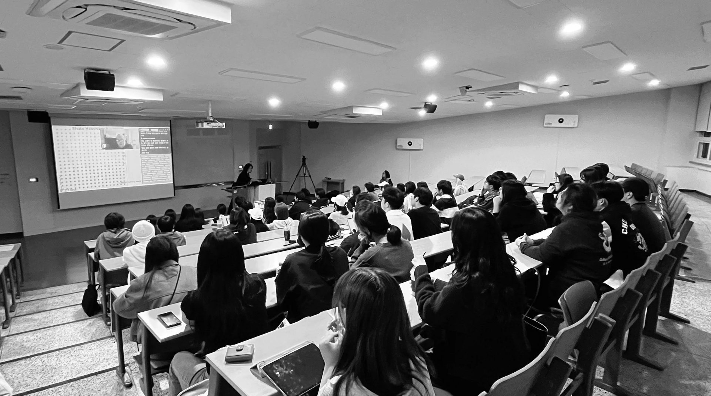
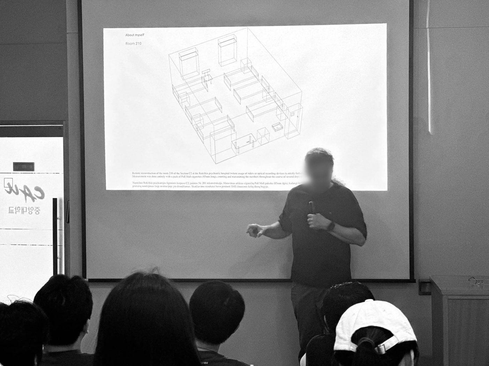
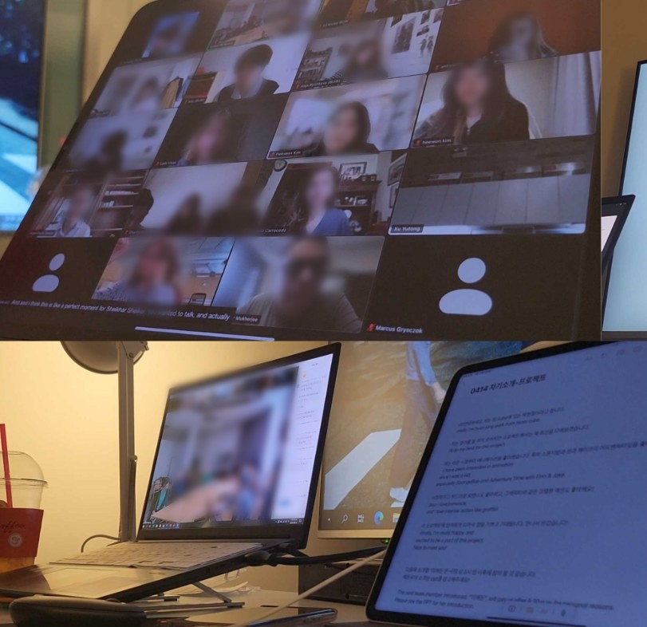

학사 과정
게임콘텐츠·애니메이션전공의 학부 과정은 4년(8학기)의 학사(Bachelor of Arts, Intensive Course) 학위 과정입니다. 1학년 기초 과정에서 2학년 탐구, 3학년 심화를 거쳐 4학년 졸업작품으로 이어지며, 전공기초·전공필수·전공 선택 교과를 학년별로 배치해 단계적으로 이수합니다. 매 학기 프로젝트 기반 실습과 과제전으로 작업을 쌓고, 해외 예술대학과의 공동 제작 프로젝트와 산업 전문가 특강이 정규 교과를 보완합니다.
- 학위
- 학사 (Bachelor of Arts, Intensive Course)
- 수업 연한
- 4년 · 8학기
- 이수 구분
- 전공기초 · 전공필수 · 전공 선택 (아래 교과목 참조)
- 소속
- 중앙대학교 예술대학 글로벌예술학부 · 다빈치캠퍼스
학년별 교육과정
1학년
기초
Foundations
발상과 표현, 연출, 스토리텔링 등 기초 교과목을 중심으로 글로벌예술학부 공동 커리큘럼을 이수합니다.
2학년
탐구
Explorations in Digital Arts
정규 전공 수업이 시작됩니다. 2D/3D 그래픽, 애니메이션과 리깅, 시네마틱 연출, 게임 그래픽스, 게임 엔진의 이해와 구현을 단계적으로 배웁니다.
3학년
심화
Advanced Techniques
사전 시각화, 정서게임컴퓨팅, 프로토타입 등 프로젝트 기반 수업에서 팀 또는 개인으로 작품을 제작합니다.
4학년
졸업작품
Capstone
프로젝트 수업을 이어 가며 졸업 프로젝트를 완성하고, 졸업작품전과 포트폴리오로 선보입니다.
교과목
| 학년 | 1학기 | 2학기 |
|---|---|---|
| 1학년 기초 |
|
|
| 2학년 탐구 |
|
|
| 3학년 심화 |
|
|
| 4학년 졸업작품 |
|
|
비교과


비교과는 정규 교과 밖에서 운영하는 전공 프로그램입니다. 해외 교류와 팀 작업 경험을 넓히는 것을 목표로 하며, 해외교환개발프로젝트와 전공 특강 등은 학교 비교과 프로그램(레인보우 시스템)으로 등록해 운영합니다.
해외교환개발프로젝트여러 나라 예술대학 학생이 팀을 이뤄 한 학기 동안 작품을 함께 만듭니다. 서로 다른 제작 방식과 국제 협업 과정을 직접 경험합니다.
전공 특강학기마다 개강총회와 함께 게임·애니메이션 업계와 해외 대학의 연사를 초청해 현장의 제작 경험과 진로 이야기를 듣습니다.
게임애니잼학생회가 주관하는 2~3일 팀 제작 행사입니다. 짧은 시간 안에 게임이나 애니메이션 한 편을 기획부터 발표까지 완성합니다.
과제전 · 전시학기 작업을 모아 보여 주는 과제전, 졸업작품전, 예술제 상영·전시, 축제 부스에서 작품을 관객 앞에 선보입니다.
작품 피드백 · 국제 워크숍협정 대학 교수가 방문해 학생 작품을 직접 보고 피드백합니다.
진로 상담교수와의 개별 상담으로 교환학생, 유학, 대학원 진학, 전공 진로를 함께 계획합니다.
학사 정보
- 학사일정
- 2026-2학기 학사일정 →
- 서류 양식
- 학부 공통 양식 →
- 수강·학적
- 수강신청, 휴학·복학, 전과, 다전공은 CAU 포털과 학사일정의 신청 기간을 따릅니다.